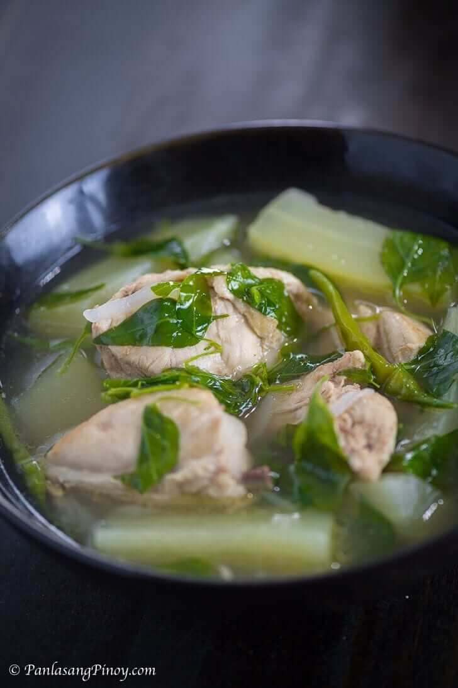

Chicken Tinola

A simple yet delicious Filpino classic dish of a soup full of chicken and Chayote.
It's flavorful broth is something to be loved alongside rice.
Ingridients
- 1 Whole Chicken cut into several pieces
-
- 1/2 piece green papaya cut into wedges
- 1 tablespoon garlic
- 1 thumb ginger cut into strips
- 5 tablespoon fish sauce
- 1 cup hot pepper leaves
- 1/4 teaspoon ground black pepper
Steps
- Saute the garlic, onion, and ginger.
- Put in the chicken and cook until golden brown.
- Add the fish sauce. Stir. Pour water into the cooking pot then let it boil.
- Cover the pot and let it simmer for 45 minutes. (Add water if needed)
- Add the hot pepper leaves or mlunggay leaves. Stir and cook for another minute.
- Season with ground black pepper. Add fish sauce and salt to taste.
- Transfer to a bowl to serve.
Go Back